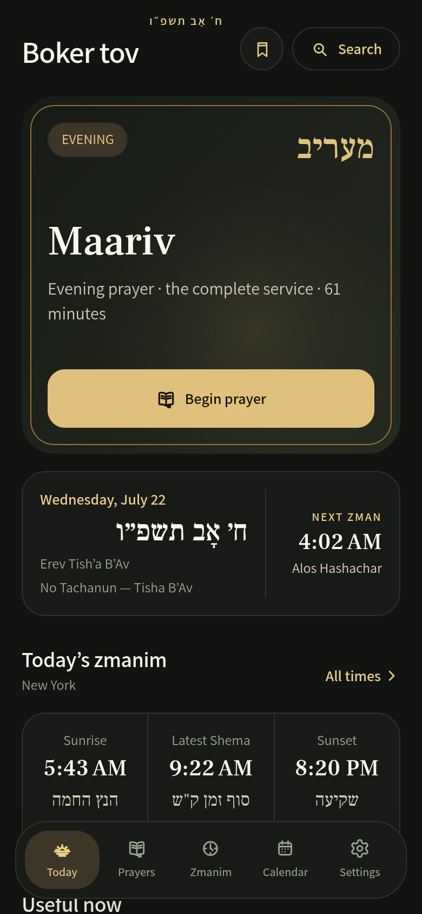
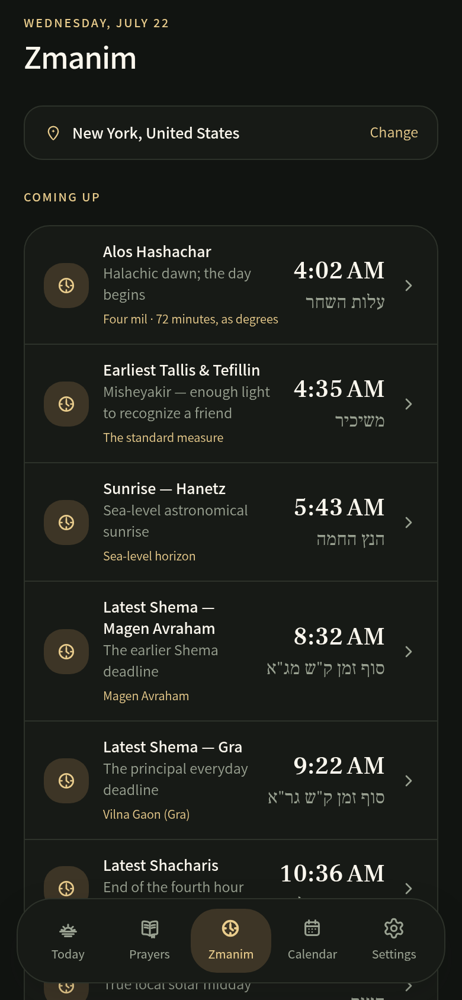
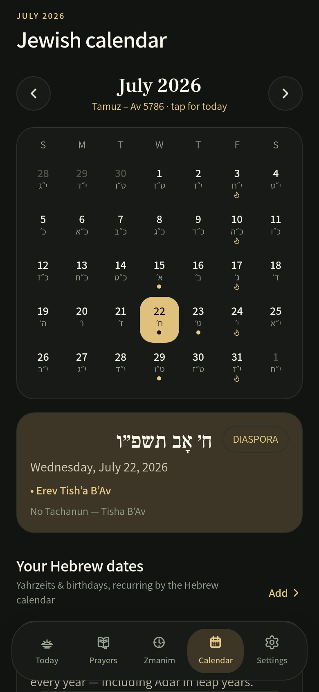

מוֹדֶה אֲנִי
סִדּוּר
שֶׁיּוֹדֵעַ אֵיזֶה יוֹם הַיּוֹם
The siddur that knows what today is.
Your daily prayers, all 150 Tehillim, and local zmanim. Four nusachim, ready offline. Typeset like a sefer you would actually want to hold.

הַסִּדּוּר
Open. Daven. Done.
No menus to dig through and no wrong page — the day's davening is one tap from the moment the app opens.
תְּפִלָּה
A siddur that follows the calendar
The Smart Siddur builds today's complete service — and only today's.
- Ya'aleh V'yavo, Al HaNissim, and seasonal insertions appear exactly on their days
- Hallel and Musaf are stitched in on Rosh Chodesh — nothing to find, nothing to skip
- Minyan-only parts fold away when you daven alone
- Available English translation and full transliteration, side by side
זְמַנִּים
Zmanim with the reasoning attached
Every time states its method — and you choose the opinion.
- Dawn to nightfall for wherever you are, calculated on your device
- GRA, Magen Avraham, Baal HaTanya, Rabbeinu Tam, and more
- Times follow you when you travel, or stay pinned to your city

לוּחַ
The Hebrew calendar, kept for you
Dates, parsha, and the people you remember.
- Holidays, Rosh Chodesh, and the weekly parsha at a glance
- Yahrzeits, Hebrew birthdays, and anniversaries — tracked correctly through leap years
- Sync candle-lighting and your personal dates to your phone's calendar

Fully offline
Your daily siddur, saved prayers, and core zmanim work without a connection.
Search that forgives
English, Hebrew, topics, occasions — typos and all.
Bookmarks & progress
Save a prayer to your library and return to where you left off.
Rests when you rest
On Shabbos and Yom Tov the app steps aside — by design.
Tefillin mirror
A live, on-device camera preview. Nothing recorded, ever.
Private by design
No ads, no data sale, no cross-app tracking. Your davening is yours.
שְׁאֵלוֹת
Questions, answered
Do I have to subscribe to use Daven?
No. The daily siddur in all four nusachim and all 150 Tehillim are free. Downloading Daven does not start a subscription. Premium is optional, and Apple shows the price and terms before you confirm a purchase.
Does Daven work offline?
Yes. Prayer content, calendar logic, saved preferences, bookmarks, notes, and core zmanim all work without a network connection.
Which nusachim are included?
Ashkenaz, Sefard, Edot Mizrach, and Chabad — and the whole library truly changes with your setting, not just the Amidah.
Is an account required?
No. An account exists only for optional cross-device sync of your preferences and personal content.
Why is a zman different from my shul calendar?
Methods and location assumptions can differ. Check the selected city and the Israel/Diaspora setting — then follow your community calendar and local halachic authority.
מַתְחִילִים
Your next tefillah, ready.
Choose your nusach, set your city, and open Today. No account is needed to start.
פִּתְחוּ וְהִתְפַּלְּלוּ
Open, and daven. The rest is set for you.